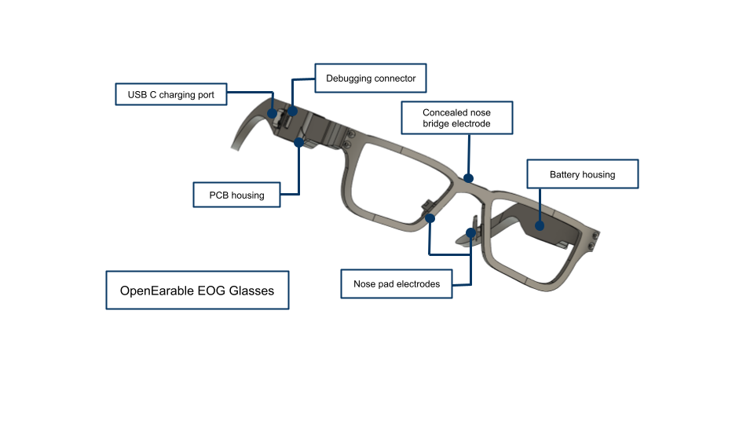
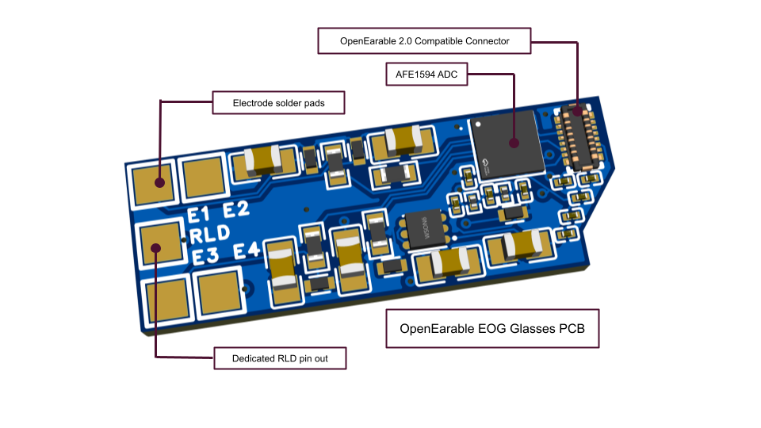
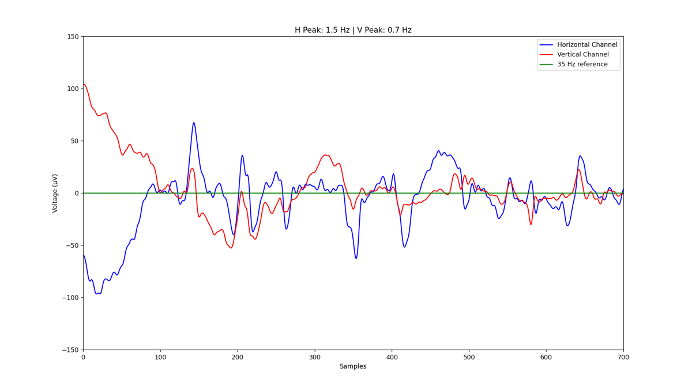

OpenEarable EOG Glasses
Open-source eyeglasses for tracking eye movements via electrooculography. Dry electrodes at natural skin-contact points—the nose pads and nose bridge—pick up changes in electric fields caused by eye movement, allowing for directional classification.
- Developed open-source C device driver for bio-potential ADC from vendor spec, exposing a configurable 4-channel interface (gain, right-leg-drive) through an API with support for 6 pins; integrated driver into the platform's sensor abstraction layer.
- Redesigned polling-based sensor driver from busy-waiting to interrupt-driven I/O on Zephyr RTOS, reducing CPU overhead and enabling dual-channel support across 7 configurable sample rates up to 500 Hz.
- Built Python script to process and filter EOG signal data streamed via Bluetooth Low Energy, enabling real-time visualization; validated the pipeline with a threshold-based gaze classifier, confirming consistent, low-noise tracking across test sessions.
- Designed PCB and 3D-printed chassis, shrunk legacy PCB footprint by 55%, integrated electrodes at natural skin contact points.
- C
- Zephyr RTOS
- BLE
- Python DSP
- EasyEDA
- Fusion 360

Wearable prototype integrating the custom electronics, dry electrodes, battery, and 3D-printed frame.

Custom AFE1594 expansion board with four configurable sensing channels and a dedicated right-leg-drive pin.

Recorded horizontal and vertical EOG channels used to validate the Bluetooth signal pipeline.